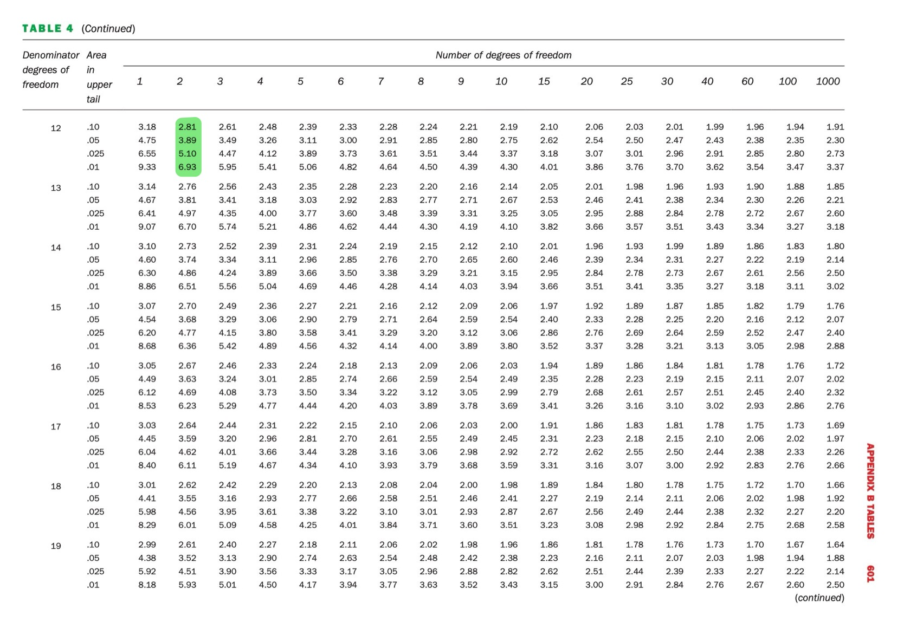

qf(0.05,2,12,lower.tail = FALSE)[1] 3.885294This tutorial walks through the manual calculation of a One-Way ANOVA table step by step. The goal is to understand the decomposition of variance and statistical significance testing. It does not cover checking the assumptions or model fitting.
We analyse the effect of study environment on student performance. The dataset contains test scores from students studying in different environments. Below the data are shown in long format and in wide format. You should be able to use both formats.
| Group | Score |
|---|---|
| Library | 78 |
| Library | 80 |
| Library | 75 |
| Library | 82 |
| Library | 77 |
| CoffeeShop | 70 |
| CoffeeShop | 74 |
| CoffeeShop | 72 |
| CoffeeShop | 69 |
| CoffeeShop | 73 |
| Home | 82 |
| Home | 85 |
| Home | 79 |
| Home | 81 |
| Home | 80 |
| ID | CoffeeShop | Home | Library |
|---|---|---|---|
| 1 | 70 | 82 | 78 |
| 2 | 74 | 85 | 80 |
| 3 | 72 | 79 | 75 |
| 4 | 69 | 81 | 82 |
| 5 | 73 | 80 | 77 |
\[ \bar{Y}_{..} = \frac{\sum Y_{ij}}{N} \] where \(Y_{ij}\) are individual observations and \(N\) is the total number of observations.
\[ \bar{Y}_{..} = \frac{78+80+75+82+77+70+74+72+69+73+82+85+79+81+80}{15} = 77.07 \]
For each group: \[ \bar{Y}_{i.} = \frac{\sum Y_{ij}}{n_i} \]
where \(n_i\) is the number of replicates per treatment.
For Library: \[ \bar{Y}_1 = \frac{78+80+75+82+77}{5} = 78.4 \]
For Coffee Shop: \[ \bar{Y}_2 = \frac{70+74+72+69+73}{5} = 71.6 \]
For Home: \[ \bar{Y}_3 = \frac{82+85+79+81+80}{5} = 81.4 \]
Treatment Sum of Squares (SSB or sometimes $SS_T$)
\[ SSB = r \sum (\bar{Y}_{i.} - \bar{Y}_{..})^2 \]
\[ SSB = 5 [(78.4 - 77.07)^2 + (71.6 - 77.07)^2 + (81.4 - 77.07)^2] \]
\[ SSB = 5 [(1.33)^2 + (-5.47)^2 + (4.33)^2] = 5 [1.77 + 29.91 + 18.75] = 5(50.43) = 252.15 \]
Total Sum of Squares (SSTotal)
\[ SST = \sum (Y_{ij} - \bar{Y}_{..})^2 \]
Computing each squared difference:
\[ (78-77.07)^2 + (80-77.07)^2 + (75-77.07)^2 + (82-77.07)^2 + (77-77.07)^2 + \]
\[ (70-77.07)^2 + (74-77.07)^2 + (72-77.07)^2 + (69-77.07)^2 + (73-77.07)^2 + \]
\[ (82-77.07)^2 + (85-77.07)^2 + (79-77.07)^2 + (81-77.07)^2 + (80-77.07)^2 \]
Summing these values:
\[ (0.86 + 8.56 + 4.29 + 24.29 + 0.005) + (49.98 + 9.43 + 26.17 + 65.17 + 16.56) + (24.29 + 63.17 + 4.17 + 15.48 + 8.56) = 321.96 \]
Error Sum of Squares (SSE)
\[ SS_E = SST - SSB = 321.96 - 252.15 = 69.81 \]
Treatment Mean Square (MST/MSB)
\[ MS_T = \frac{SS_T}{df_T} = \frac{252.15}{2} = 126.08 \]
Error Mean Square (MSE)
\[ MS_E = \frac{SS_E}{df_E} = \frac{69.81}{12} = 5.82 \]
\[ F = \frac{MS_T}{MS_E} = \frac{126.08}{5.82} = 21.67 \]
Compare \(F\) to the critical value from an F-distribution table or get p-value. The null distribution of this F test statistic is:
\[F\sim F_{df1,df2} = F_{2,12}\]
Using tables:

Go along the column (numerator df) and look for 2. Then go down the rows and stop at the row for 12 denominator degrees of freedom (this is on the third page of F-tables and the section is highlighted in green above).
At 5% significance level, the critical value is 3.89. Our test statistic of 21.67 is much larger than 3.89. We do no have evidence against H0.
Focusing in on the same set of F-values on the table (so 2 numerator df and 12 denominator df), we see that there 4 F-values - each corresponding to a different probability in the upper tail. The last value is 6.93 which is associated with an area to the right of 0.01. In other words, the probability of an F-value of 6.93 or more extreme under the null hypothesis is 0.01. Our test statistic is much larger than this value, so we can deduce that the p-value (the probability of observing our test statistic or more extreme under the null hypothesis) is smaller than 0.01.
In R
This line of code gives us the critical F value for a significance value of 0.05.
qf(0.05,2,12,lower.tail = FALSE)[1] 3.885294Using R we can get an exact p-value and we see that it is indeed smaller than 0.01.
pf(21.67, 2, 12, lower.tail = FALSE)[1] 0.0001039567There is strong evidence against the null hypothesis of equal means (F = 21.67, p-value = 0.0001). We conclude that the treatment (study environment) did result in at least one different mean score between the different environments.
Remember, the alternative is not that all means are different. Only that there is a difference somewhere.